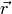
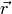
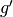
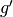
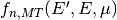
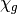

Monte Carlo tallies are multi-variate functions integrated over some portion
of phase-space. The variables of these functions for neutron simulation include
the neutron’s incoming and outgoing energies ( and
and
 , respectively), direction of motion and change in angle
(
, respectively), direction of motion and change in angle
( and
and  , respectively), and space ().
In an analog tally, each of these dimensions must be adequately represented by
the sample population. In a production environment it can become prohibitively
costly to perform this tallying to a sufficient degree of convergence. The
prime example of this is tallying multi-group scattering moments in a system
with anisotropic scattering. The analog Monte Carlo estimator for multi-group
scattering moments is:
, respectively), and space ().
In an analog tally, each of these dimensions must be adequately represented by
the sample population. In a production environment it can become prohibitively
costly to perform this tallying to a sufficient degree of convergence. The
prime example of this is tallying multi-group scattering moments in a system
with anisotropic scattering. The analog Monte Carlo estimator for multi-group
scattering moments is:
where  is the Legendre-moment order,  and
is the Legendre-moment order,  and  are the
incoming and outgoing energy groups,
are the
incoming and outgoing energy groups,  and
and  are the nuclide
and reaction channels, and
are the nuclide
and reaction channels, and  is the volumetric region of interest.
is the volumetric region of interest.
However, for certain tallies some of these variables are actually dependent
variables and the function relating the variables is known from the nuclear data
present in the continuous-energy ACE file. In the above example of multi-group
scattering moments, the  is tabulated in the ACE file
as a function of the incoming energy, . If this continuous functional
form is tallied instead of a discrete event (like with an analog estimator), the
tallies’ rate of convergence will increased, as discussed in Moment Tally.
However, these functions exist in various, non-concise forms within the ACE data. To convert these functions to a consistent and concise format such as functional expansion moments as the neutron tracking takes place would be quite costly, outweighing any increase in convergence rate by the method.
The Nuclear Data PreProcessor (NDPP) solves this problem by converting all the
various forms of these functions for each nuclide in to a single format for each
tally type as a function of . The integration over outgoing energies
is also performed, further lessening the dimensionality which must be resolved
statistically.
If a Monte Carlo code takes advantage of the pre-processing performed by NDPP, the analog Monte Carlo estimator above is reduced to:
where  is the term
provided (as) a function of ) by NDPP.
is the term
provided (as) a function of ) by NDPP.
NDPP currently only provides the values shown above for the scattering angular distribution and provides pre-integrated values of .
To provide the pre-integrated nuclear data to a Monte Carlo code, NDPP performs the following steps:
1. Read input files to determine the user’s desired putput format, energy group structure, representation of angular data, and a list of libraries/nuclides/temperatures to perform the pre-processing for.
2. NDPP will then perform the following for each library/nuclide/temperature requested by the user:
2.a. Read the ACE-formatted nuclear data in to memory.
2.b. Write the header information for the pre-processed data library to be output from NDPP.
2.c. For each scattering reaction type, step through each of the incoming energies and perform the following:
2.c.1. Determine the angular distribution boundaries corresponding to the energy group structure requested.
2.c.2. Perform integration over the outgoing energy and angle dimensions to generate Legendre moments or tabular bins as requested.
2.d. Combine all the reaction type’s data on to a unionized incoming energy grid.
2.e. Perform optional energy grid thinning.
2.f. Write the scattering data to the output library.
2.g. Perform steps similar to 2.c to 2.f but for the fission neutron outgoing energy distribution,
.